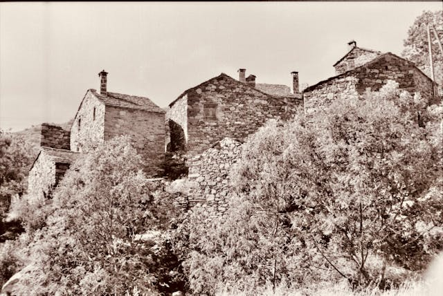
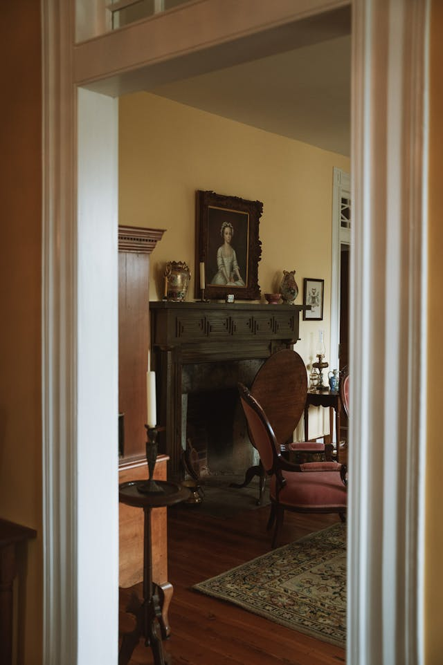

About The Blue Springs Historical Society

The Blue Springs Historical Society was founded to preserve the stories, artifacts, and landmarks that define our community’s heritage. Over the years, our organization has grown into a trusted resource for historical research, education, and preservation. Our volunteers work tirelessly to maintain the Dillingham‑Lewis House Museum, curate exhibits, and share the history of Blue Springs with residents and visitors.
Our History
The Society began with a small group of residents who recognized the importance of protecting local history. As Blue Springs expanded, many historic structures and artifacts were at risk of being lost. Through community support and volunteer dedication, the Society acquired the Dillingham‑Lewis House and transformed it into a museum that reflects the daily life of early settlers.

Our Mission and Values
We are committed to preserving the past while educating the present. Our core values include stewardship, community engagement, historical accuracy, and accessibility. We believe that history should be available to everyone, and we work to ensure that our exhibits, programs, and resources reflect that commitment.
What We Are Dedicated To
- Preserving, promoting, and fostering appreciation of the history of Blue Springs, Missouri.
- Educating the public by providing archival and library services.
- Supporting our museums in collecting and restoring historical artifacts and locations.
- Encouraging community involvement in preserving local history.
Our Function
- Maintain and improve the Dillingham‑Lewis House Museum, Chicago & Alton Hotel, and Train Depot.
- Develop and maintain a Heritage/Native Garden to educate the public about heirloom plants.
- Acquire period items for display.
- Conduct research about the history of our community and its members.
Our Nonprofit Status
We are an all volunteer, nonprofit 501(c)(3) organization founded in 1976. Financial support for the Society comes from monetary and in kind donations, grants, fundraising activities, and membership dues.
What We Do
- Maintain the Dillingham‑Lewis House Museum
- Host educational programs and tours
- Preserve artifacts, documents, and photographs
- Conduct historical research
- Partner with schools and community groups
- Organize events that celebrate local heritage
Our Impact
Through our programs and preservation efforts, we help residents connect with the stories that shaped Blue Springs. Our museum serves as a gathering place for learning, reflection, and community pride. We also support researchers, students, and genealogists who seek information about local families and historical events.
Leadership and Volunteering
The Society is led by a board of directors and supported by a dedicated team of volunteers. Each volunteer brings unique skills and passion to the organization. Their work ensures that our museum remains open, our archives remain organized, and our events continue to grow.
Looking Ahead
As Blue Springs continues to evolve, our mission remains the same: to preserve the past for future generations. We are committed to expanding our exhibits, improving accessibility, and strengthening our role as a community resource.